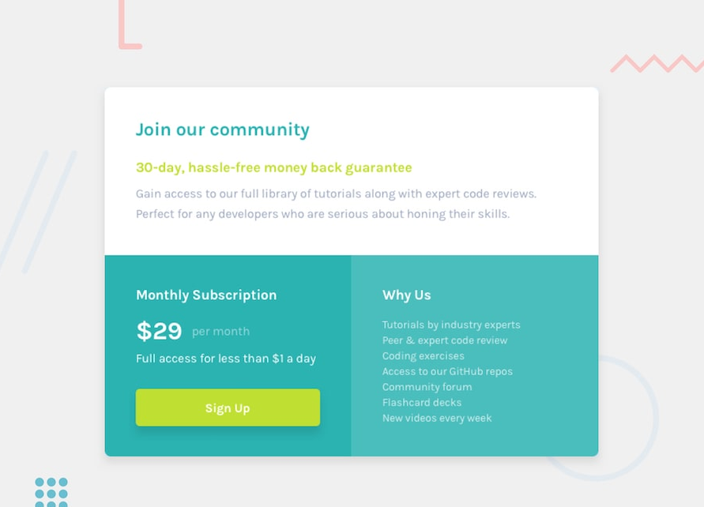
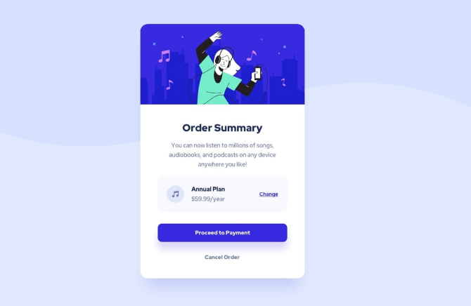
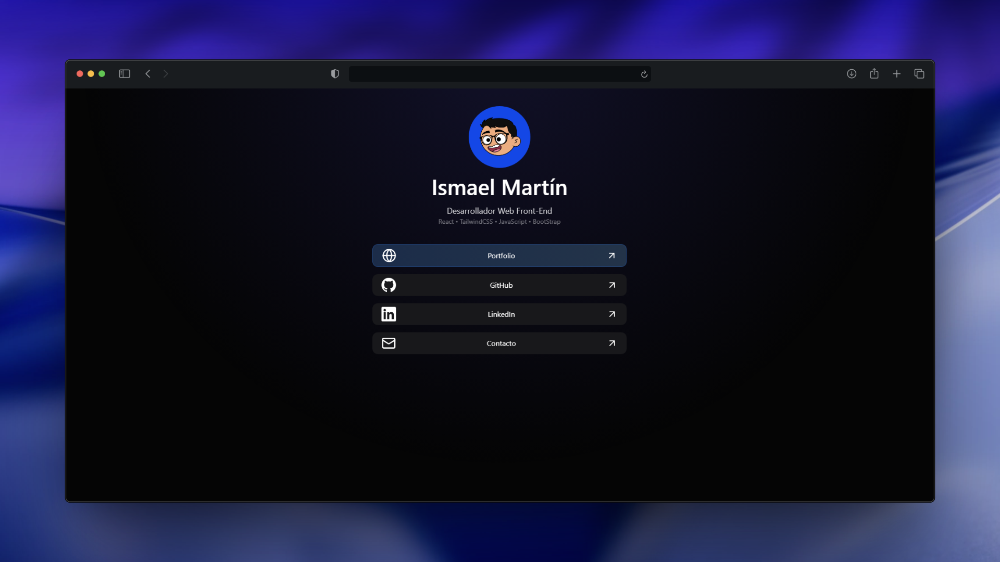
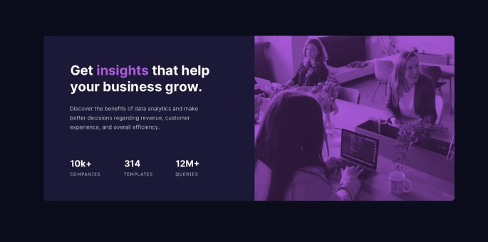

Ismael Martín
Desarrollador Web Front-End
Actualmente formándome como desarrollador Front-End y aprendiendo a crear aplicaciones web modernas y bien diseñadas.

Sobre mí
Soy estudiante de Sistemas Microinformáticos y Redes con un gran interés por el desarrollo de software. Me gusta entender cómo funcionan las tecnologías que utilizo y aprender construyendo proyectos reales, donde puedo experimentar, cometer errores y mejorar continuamente.
Disfruto explorando nuevas herramientas y buscando siempre formas de escribir código más claro, mantenible y eficiente. Para mí, el desarrollo no consiste solo en hacer que algo funcione, sino en construir soluciones bien pensadas que ofrezcan una buena experiencia al usuario.
Actualmente dedico gran parte de mi tiempo a seguir aprendiendo, desarrollar proyectos propios y profundizar en nuevas tecnologías. Me motiva enfrentarme a retos técnicos, mejorar mis habilidades como desarrollador y seguir creciendo dentro del mundo del software.
Proyectos
En esta sección puedes encontrar algunos de los proyectos en los que he trabajado. Cada uno de ellos forma parte de mi proceso de aprendizaje y refleja mi interés por el desarrollo de software, la experimentación con nuevas tecnologías y la creación de soluciones bien estructuradas.

Página de precios responsive
Desarrollo de una página web responsive con diseño moderno y estructura clara, utilizando HTML y CSS. Implementada a partir de un diseño de Frontend Mentor.

Página de resumen de pedido responsive
Desarrollé una página web responsive de resumen de pedido utilizando HTML y CSS. El proyecto está basado en un diseño de Frontend Mentor y se centra en la creación de una interfaz clara, moderna y adaptable a diferentes dispositivos.

Plataforma de centralización de enlaces
Desarrollé una web responsive orientada a centralizar todos mis enlaces en un único espacio accesible. El sistema permite a cualquier usuario acceder de forma rápida, clara y optimizada a mi contenido digital.

Página de vista previa de estadísticas responsive
Desarrollé una página web responsive de vista previa de estadísticas utilizando HTML y CSS. El proyecto está basado en un diseño de Frontend Mentor y se centra en la creación de una interfaz moderna, clara y adaptable a distintos dispositivos.